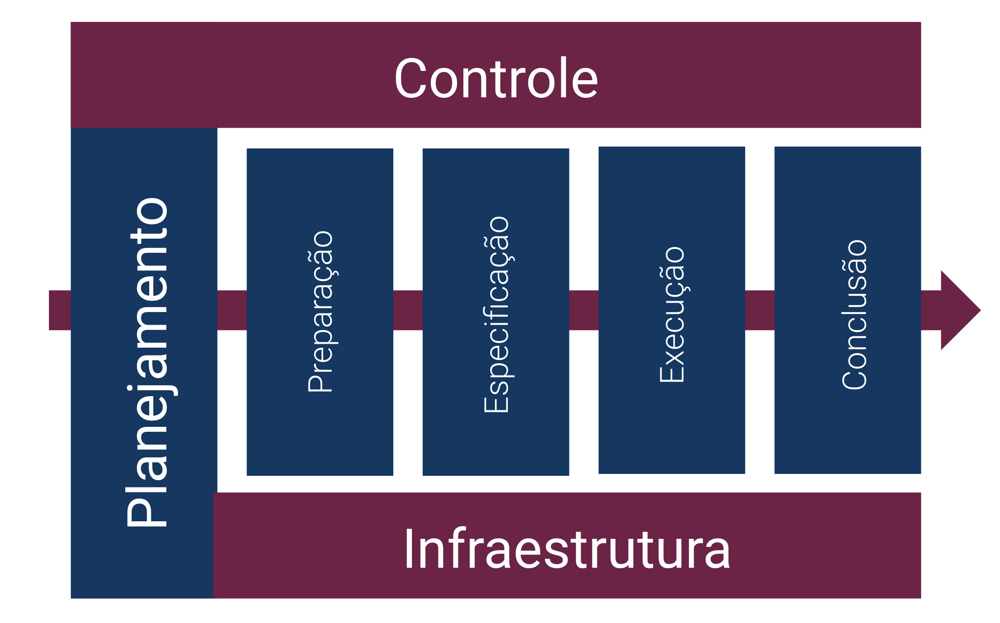

TMoh

Processos
Executar o TMoh
Definir plano geral de teste
Controlar o processo de teste
Realizar a manutenção da infraestrutura
Preparar o teste
Planejar o teste
Especificar o teste
Executar o teste
Concluir o teste
© Rodrigo de Farias Giglio
Universidade federal de Ciências da Saúde de Porto Alegre